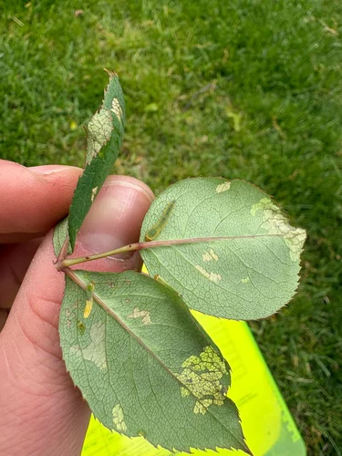

月季叶蜂的刮食痕迹
照片里看得到的是叶脉之间被刮薄的浅色斑，叶脉仍是绿的。浅绿色幼虫不是这张照片的主体。

现场检查
把叶片举起对光，薄区应在叶脉之间，表皮还在。再翻到叶背找幼虫，找到了就单独拍照，不要靠这张食痕照片声称幼虫已经入镜。
鉴别相似表现
黑斑是深色的坏死块，不会透出完整的叶脉网格。咬穿的孔是组织缺失，和这种窗纸状的刮痕不同。
处理选择
幼虫还在叶上时，可以摘掉正在被刮的小叶。只剩下干了的旧薄斑、找不到虫时，先不要把整株重剪。
后续复查
新叶若又出现透光的薄区，再翻叶背。旧斑变干以后仍会留在成叶上。
寄主检查要点
只记在玫瑰和月季上。其他灌木的透光斑先核对叶形。
选一片只有一处透光斑、四周仍绿的小叶，先看斑与绿组织的交界。若幼虫正在边缘刮食，可单独摘虫；若只是干斑且新叶健康，不必因此剪掉开花枝。